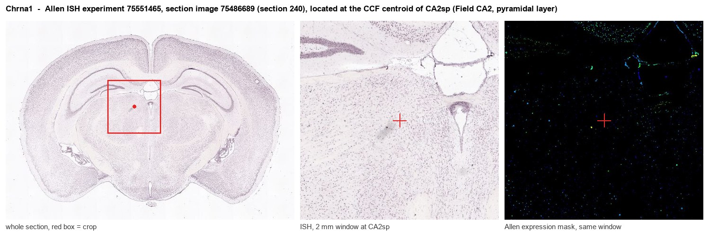
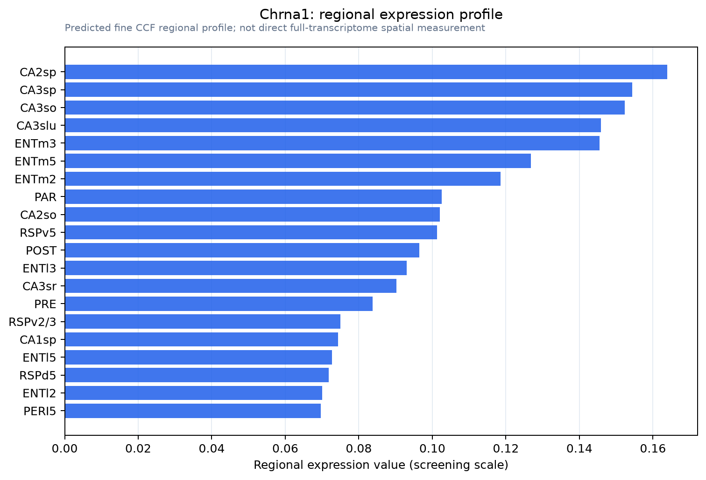

Chrna1
Acetylcholine receptor subunit alpha
Spatial tier: REGION_BIASED · Class: ION_CHANNEL · Top region: CA2sp (Field CA2, pyramidal layer) · Positive regions: 35/554
44.2Discovery Score
34.2Targetability Score
CEvidence grade C
What this means: Chrna1: fine CCF profile is region-biased toward CA2sp (top regions: CA2sp, CA3sp, CA3so, CA3slu, ENTm3); this is a discovery lead, not direct proof.
Function in CA2sp: evidence, prediction, innovation
- Gene function
- Chrna1 encodes the alpha1 subunit of the muscle-type nicotinic acetylcholine receptor, a pentameric ligand-gated cation channel that mediates fast depolarisation at the neuromuscular junction. The alpha1 subunit carries the principal ACh-binding face and the alpha-bungarotoxin site; its mutation causes congenital myasthenic syndromes and it is the main autoantigen in myasthenia gravis. It is not normally regarded as a CNS receptor subunit.
- Region function
- Hippocampal CA2 is a small pyramidal subfield between CA3 and CA1 that receives dense entorhinal layer II and septal/supramammillary input and is required for social recognition memory and for pacing sharp-wave ripples.
- Published in this region
- none No region-specific literature found. The closest evidence is anatomical and weak: Allen coronal ISH (experiment 75551465) shows high but spatially near-uniform Chrna1 signal across CA2, CA1, CA3 and ARH (energy 6-9), a pattern typical of probe background, while the sagittal experiment 100146096 shows essentially nothing (0.03-0.09); the CA2 proteome of Gerber et al. 2019 does not report alpha1 protein.
- Predicted function
- Prediction: genuine alpha1 protein in CA2 is unlikely, so the first experiment should be validation (RNAscope plus alpha-bungarotoxin binding with alpha7-knockout controls) rather than manipulation. If confirmed, the plausible role is a non-canonical nicotinic conductance, or an assembly/chaperone contribution to heteromeric receptors on CA2 pyramidal cells, which receive strong septal cholinergic input. Conditional deletion would then reduce a bungarotoxin-sensitive, alpha7-independent current and slightly blunt cholinergic facilitation of CA2 firing.
- Innovation
- ★★★☆☆ 3/5 Nobody has studied Chrna1 in hippocampus, but the atlas signal looks like background, so novelty is high and so is the risk of nothing being there.
- Tools
- Alpha-bungarotoxin and muscle-nAChR antibodies (both cross-react with alpha7, so alpha7-knockout controls are required); Chrna1 mutant alleles from congenital-myasthenia models; Amigo2-Cre for CA2-restricted manipulation. No CNS-specific driver or selective ligand known.
- References
Direct evidence located at the region

Allen ISH experiment 75551465, section image 75486689 (section 240): the section that contains the CCF centroid of Field CA2, pyramidal layer according to the Allen image-to-atlas alignment (reference_to_image), with a 2 mm window around that point. Left: whole section, red box = window. Middle: ISH signal. Right: Allen's expression-mask view of the same window. open this image in the Allen viewer
Look it up yourself: Allen Mouse Brain ISH for Chrna1Allen reference atlas: CA2sp (structure 446)ABC Atlas MERFISH viewer(in the ABC Atlas choose dataset MERFISH-C57BL6J-638850-CCF, colour cells by gene "Chrna1" or by parcellation_substructure "CA2sp")All genes confined to CA2sp + 3-D brain
Direct spatial evidence
MERFISH REGION LOCATOR

Regional expression figure

Predicted WMB × fine-CCF profile; not direct full-transcriptome spatial measurement.
Spatial profile
Evidence and specificity
- Evidence status
- PREDICTED_FINE
- Direct sources
- None; predicted localization only
- Exclusive threshold
- 12 positive regions out of 554
- Spatial specificity
- 0.309
- Top-region fraction
- 0.045
- Filter status
- PASS
Interpretation limits
- Cell-type-to-region projection is imputed expression, not direct spatial measurement.
- Adult reference atlases do not establish stability across age, sex, strain, state, or disease.
- Transcript abundance does not guarantee protein abundance or genetic-tool performance.